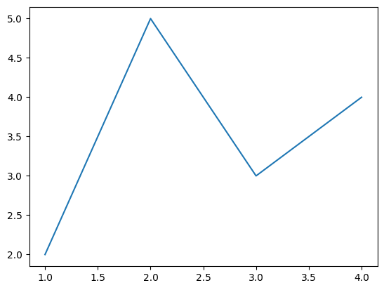
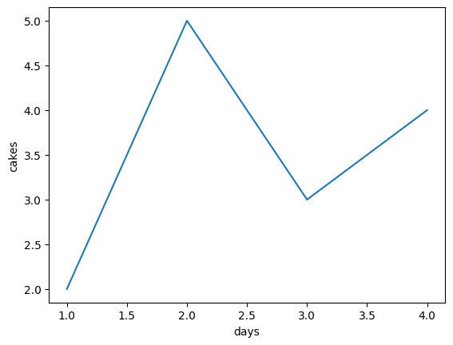

Appendix E — Seaborn tutorial#
WIP
See planned outline here https://docs.google.com/document/d/1fwep23-95U-w1QMPU31nOvUnUXE2X3s_Dbk5JuLlKAY/edit#bookmark=id.3i7cktuf1u3i
In this tutorial, we’ll learn about Seaborn data visualizations. We’ll discuss Seaborn plot functions
TODO: LIST / TABLE
We’ll also describe the various options for customize plots’ the appearance, add annotations, and export plots as publication-quality images.
If you want to pursue a career in a data-related field, I highly recommend you get to know Seaborn by reading this tutorial and the other resources in the links section.
Introduction to Seaborn#
import seaborn as sns
import pandas as pd
days = [1, 2, 3, 4]
cakes = [2, 5, 3, 4]
sns.lineplot(x=days, y=cakes)
<Axes: >

# (optional) use Matplotlib axis methods to add labels
ax = sns.lineplot(x=days, y=cakes)
ax.set_xlabel("days")
ax.set_ylabel("cakes")
Text(0, 0.5, 'cakes')

df = pd.DataFrame({"days":days, "cakes":cakes})
df
| days | cakes | |
|---|---|---|
| 0 | 1 | 2 |
| 1 | 2 | 5 |
| 2 | 3 | 3 |
| 3 | 4 | 4 |
df.columns
Index(['days', 'cakes'], dtype='object')
sns.lineplot(x="days", y="cakes", data=df)
<Axes: xlabel='days', ylabel='cakes'>
# # ALT. hybrid approach
# sns.lineplot(x=df["days"], y=df["cakes"])
Links#
Here are some links to learning resources for Seaborn and data visualization techniques.
Official docs#
An introduction to seaborn
http://seaborn.pydata.org/introduction.htmlSeaborn tutorials featuring lots of useful plot examples
https://seaborn.pydata.org/tutorial.htmlGallery of data visualizations produced using Seaborn
https://seaborn.pydata.org/examples/index.html
Tutorials#
Python Seaborn Tutorial For Beginners
https://www.datacamp.com/community/tutorials/seaborn-python-tutorialThe Ultimate Python Seaborn Tutorial
https://elitedatascience.com/python-seaborn-tutorialPython Seaborn Tutorial
https://www.geeksforgeeks.org/python-seaborn-tutorial/
Video tutorials#
Intro to Seaborn by Kimberly Fessel (excellent!)
https://www.youtube.com/playlist?list=PLtPIclEQf-3cG31dxSMZ8KTcDG7zYng1j
see also notebooks from the videos.Seaborn Tutorial 2021 by Derek Banas
https://www.youtube.com/watch?v=6GUZXDef2U0Data Visualisation with Seaborn Crash Course by Valentine Mwangi
https://www.youtube.com/watch?v=zafPvR4MmBA See also the colab notebook for the course.